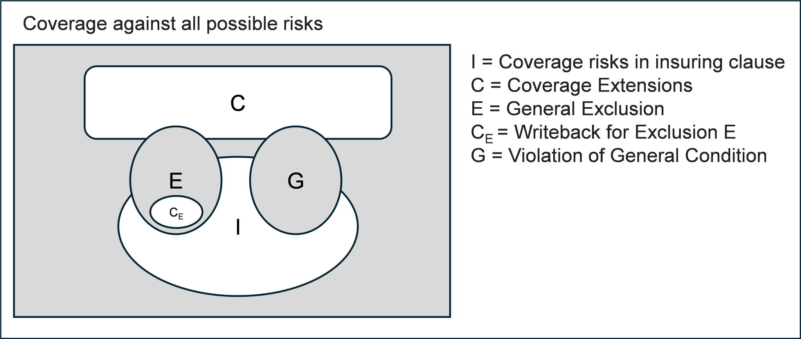

Making an insurance contract computable requires a solid understanding of its constituent parts and how they operate together to establish the overall function of expressing coverage against loss. A visual representation of an insurance contract[19] (shown in Figure 3, “Visual representation of coverage offered by an insurance contract.”) may help to promote this understanding.
At the heart of an insurance contract lies the insuring clause, which describes the core coverage offered to the insured. This is shown in Figure 3, “Visual representation of coverage offered by an insurance contract.” with ‘I’ as the basic set (or scope) of coverage. This scope of coverage expressed by the insuring clause is often modified using coverage extensions (denoted by C in the Figure). These extensions are additional coverages beyond the scope of the core insuring clause, defined by additional clauses in the contract. They may be offered as standard, or on an optional basis, in which case their selection may result in an increase in the premium.
Coverages expressed by the insuring clause or coverage extension clauses are normally subject to conditions, which, if not met, will invalidate (shown as ‘G’ in the Figure) the coverage offered by the contract and therewith the promise of indemnification. These conditions may be expressed locally, directly in the coverage clauses themselves, or globally, as general conditions that apply to all the coverage clauses.
Most insurance contracts also contain exclusions, which specify losses or costs of losses that are not covered by the contract (i.e. areas of non-coverage). Like coverage conditions, coverage exclusions, can be local or general and are represented by ‘E’ in the Figure.
Finally, some exclusions may have exemptions, usually expressed locally to the exclusion, using phrases such as ‘except for’. These can be understood as coverages that are excluded at first, but then reinstated (known as ‘writebacks’ in the industry). As shown in Figure 3, “Visual representation of coverage offered by an insurance contract.”, the exclusion exemption, ‘CE‘ is shown within the general exclusion ‘E’, which is unshaded and indicative of its status as a form of coverage.
Figure 3. Visual representation of coverage offered by an insurance contract.
 |
In prose form, the indemnification promise shown in Figure 3, “Visual representation of coverage offered by an insurance contract.” may be stated as follows:
We will cover you for the costs (to cover one or more losses) in I, which are specified in the insuring clause and which also satisfy the general conditions, usually not referred to explicitly in the insuring clause.
We will also cover you for the additional costs in C, which are specified in additional clauses and which satisfy both the general conditions and the conditions that are local to those clauses.
We will not cover you for specific exclusions (E) except for CE in respect of E.
[19] Cummins, John et al, 2024. “Computable Contracts for Insurance: Establishing an Insurance-specific Controlled Natural Language – InsurLE”. Journal of British Insurance Law Association